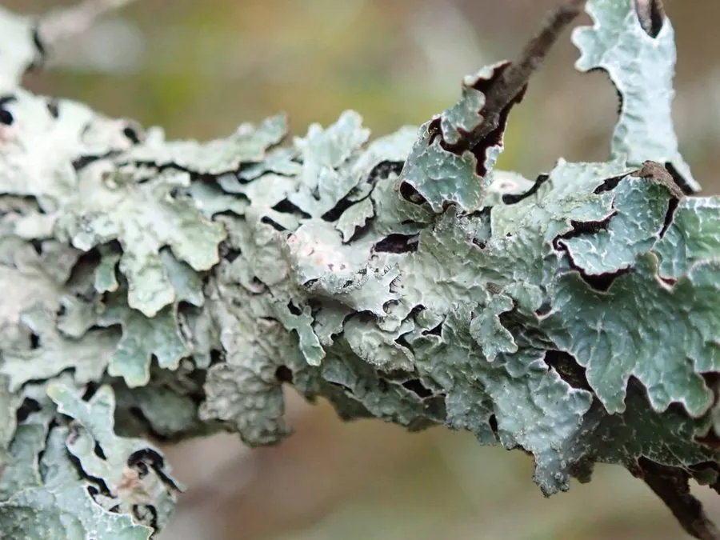

真菌 · 真菌界
梅衣 Parmelia sulcata

梅衣是叶状地衣，地衣体灰绿色、表面有网状皱褶，紧贴树皮或岩石生长，常被用作监测空气质量的指示物种。
- 分类
- 门子囊菌门纲茶渍纲目茶渍目科梅衣科属梅衣属
- 栖息环境
- 阔叶树与针叶树的树皮、岩石和木栅栏上，温带地区常见
- 地理分布
- 北半球温带广泛分布，中国北方与西南山地常见
- 保护级别
- 暂无评估（IUCN 未评估，中国未列入重点保护名录）
物种志
梅衣是地衣，由子囊菌与绿藻共生形成。地衣体呈叶状，直径 5–10 cm，紧贴树皮或岩石生长，边缘有浅裂片；表面灰白色、灰绿色至蓝灰色，干燥时更偏灰白，湿润时略带绿色。表面有明显的网状皱褶和凹沟，沟中常产生粉芽（细小的繁殖颗粒），形成白色的粉状斑。背面黑色或深褐色，长有假根，用来固着在基物上。
梅衣生于阔叶树和针叶树的树皮、岩石和木栅栏上，在温带地区广泛分布，中国北方和西南山地常见。它靠吸收空气中的水分和溶解的养分生活，对二氧化硫等空气污染物有一定耐受性，但仍可作为环境监测的指示地衣。梅衣不可食用，质地干硬、没有食用价值；它在传统上曾被用作染料，提取物呈黄褐色。地衣生长缓慢，采集时应注意保护，不要从树干上大面积刮取。
形态与习性
- 分类地衣，由子囊菌与绿藻共生
- 地衣体叶状，直径 5–10 cm
- 表面灰绿色，有网状皱褶和凹沟
- 粉芽沿沟分布，呈白色粉状
- 背面黑色，有假根固着
- 生境树皮、岩石与木栅栏
- 用途环境监测指示，传统上作染料
趣味知识
- 梅衣的表面有网状皱褶和沟槽，名字里的“沟”由此而来。
- 沟里那些白色的粉状物是粉芽，用来繁殖。
- 它紧贴树皮生长，背面黑色的假根把它固定住。
- 地衣生长很慢，观察时尽量不要从树上刮下来。